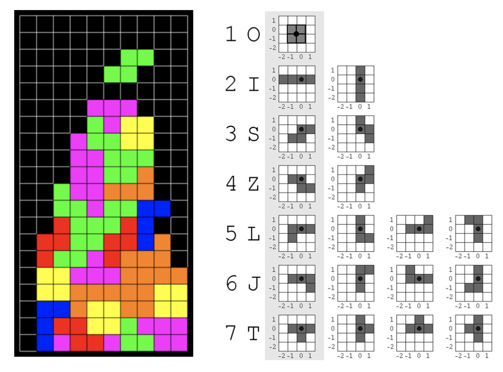

A broswer-based game powered by WebGL library to utilize GPU rendering
The game window consists of a 20 x 10 square grid of appropriate size. There are seven standard Tetris tiles with the pivot of rotation indicated by a black dot. The game includes the classic functionalities for tile such as rotation, horizontal movement, downward acceleration, stack-up and clear. The code is programmed in an object-oriented fashion with clear file structure.
